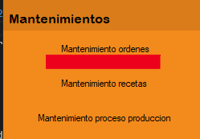
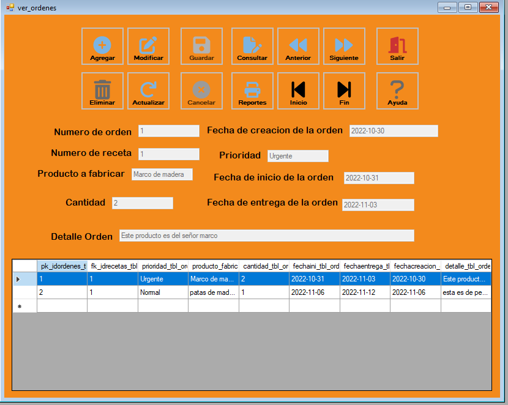

El proceso de Mantenimiento ordenes tiene como objetivo registrar una nueva venta al sistema. Para ello debemos dirigirnos al menú de Procesos y luego seleccionamos la opción Venta.
En la siguiente Figura podremos observar el Formulario que debemos llenar. Tambien hay que tener en cuenta que si se quiere modificar el "Numero de receta", tiene que existir, y a la hora de colocar la fecha tiene que re-escribirse con el formato establecido en los Textbox. Deben colocarse datos numericos en textbox que posean numeros para que no hayan inconvenientes en la base de datos.
